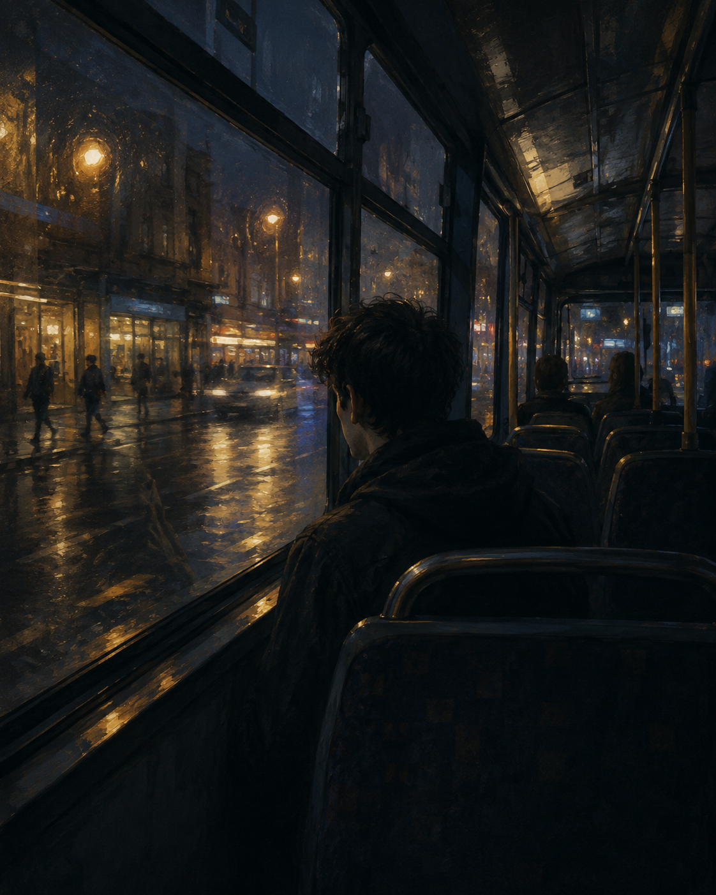
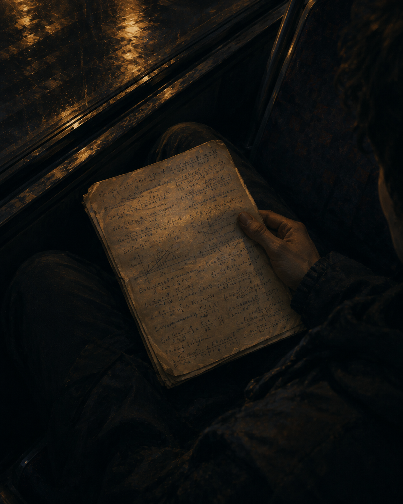

Route Six
Friday · 9:07 PM · Somewhere in Chengdu
Friday night, a little after nine.
Route Six hums beneath the traffic lights.
A few of us sit scattered by the glass,
watching faces flicker into night.
Shops fold their shutters one by one.
Steam drifts somewhere down the street.
For a moment every stranger
seems like someone I might meet.

My reflection crosses theirs,
then the window turns to black.
The city keeps on slipping past.
Nothing asks me to look back.
Still, on my knees, an old page waits,
filled with equations in my hand—
careful answers for a name
I once thought I could understand.

The answers have not changed at all.
Only the years have gone.
I don’t know where to go tonight,
so I let the bus decide.
Past the windows, past the yellow lights,
past the lives on either side.
Maybe I have missed some stations.
Maybe some were never mine.
Doors keep opening and closing
somewhere farther down the line.
No one here knows what I’m proving.
No one asks who I should be.
For a few more stops, the darkness
leaves a little room for me.
Another streetlight crosses the glass.
Another quiet corner passes by.
I could reach up for the bell.
I don’t.
And neither does the night.
留言